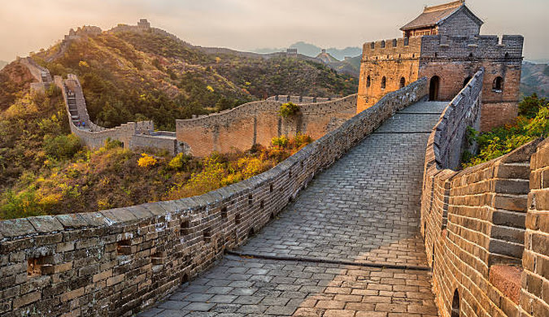

- Culture: Chinese culture is deeply rooted in Confucianism,
Taoism, and Buddhism, influencing social values, etiquette,
and familial relationships.
Traditional art forms like calligraphy,painting, and traditional
Chinese opera showcase the country's artistic heritage.
- Customs: Respect for elders is a key custom in Chinese society,
reflected in various aspects of life,
including greetings and family interactions.
Red is a color symbolizing good luck, often used in celebrations,
especially during weddings and the Chinese New Year.
- Food: Chinese cuisine is diverse,
with regional variations in flavors and cooking styles.
Staple foods include rice and noodles,
and dishes often balance the five flavors of sweet, sour, bitter, spicy, and salty.
Dim sum, Peking duck, and hot pot are popular dishes.
- Tea Culture: China has a rich tea culture with various types of tea,
such as green tea, oolong, and pu-erh.
Tea ceremonies are common, emphasizing mindfulness and
the appreciation of the tea-drinking experience.
- Festivals: The Chinese New Year, also known as Spring Festival,
is the most important traditional festival, marked by family reunions,
feasts, and the iconic dragon and lion dances.
The Mid-Autumn Festival is another significant celebration.
- Traditional Clothing: The qipao for women
and the changshan for men are traditional Chinese garments.
However, these are mainly worn during special occasions,
while everyday clothing has adopted Western styles.
|  |